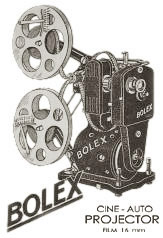
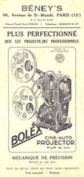

AUTO CINE
16mm and 9.5mm Projector
1928
- OVERALL DIMENSIONS: Approximately 12in x 8in x 5in (30cm x 20cm x 12cm)
- WEIGHT: Approximately 10 lbs (4.5 kg)
- CONSTRUCTION: Black "crinkle" paint finish.
- REEL CAPACITY: Reel arms accommodate 400 ft reels.
- THREADING: Manual threading and loop forming of film; Interchangeable sprockets and guides allow projection of either 16mm or 9.5mm film.
- POWER: 145 volt AC mains lead
- LAMP: Osram Nitra 6V 20W with integrated mirror.
- LENS: Hermagis Paris F 45mm
- SPEED: 16 frames per second; Stop; Rewind
- OTHER FEATURES: Adjustable base allows for the proper alignment of the projected image.

Notes and Comments
This was the first projector designed by Jacques Bogopolsky after he formed the Bolex company. Unfortunately, I have little information on this model, apart from what I've been able to translate (poorly, via Babelfish) from French advertisements of the late 1920s.
Andrew Alden, in his book, A Bolex History, identifies two versions of the Auto Cine. The first, designed to project 16mm film; the second version, a dual guage projector with interchangeable sprockets for projecting both 9.5mm and 16mm film. [1]
Special thanks to Heinrich Kriesi, a collector from Switzerland, for providing much of the missing details and specifications of this projector.
1 Andrew Alden, A Bolex History (A2 Time Based Graphics, 1998), 7.